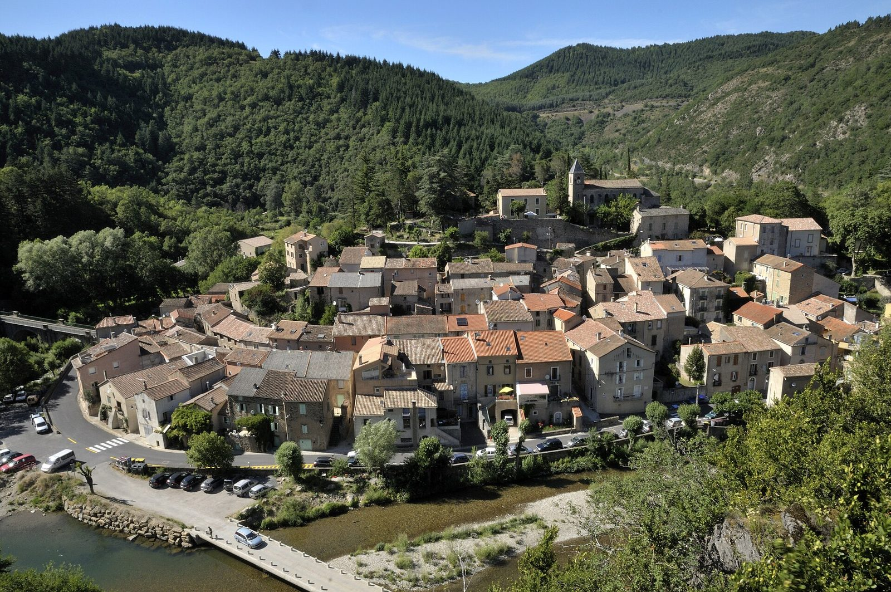

Les Thermes d'Avène
Dans la haute vallée de l'Orb, la station thermale d'Avène est dédiée à la dermatologie. Cures conventionnées, hôtel et restaurant permettent de préparer un séjour sur place.
Le village d’Avène au bord de l’Orb · Photo © Toutaitanous · CC BY-SA 3.0
À une dizaine de minutes de Ceilhes, dans la haute vallée de l'Orb, la station thermale d'Avène est mondialement connue pour les vertus apaisantes de son eau thermale. Elle conjugue soin, nature et sérénité.
Son centre thermal est entièrement dédié à la dermatologie et au traitement des affections des muqueuses buccales — une spécificité rare en France.
L'eau thermale & les cures
L'eau thermale d'Avène, apaisante et anti-irritante, apporte un soulagement reconnu dans de nombreux cas de dermatite atopique (eczéma), de psoriasis, de séquelles de brûlures et de cicatrices.
La station propose des cures conventionnées de 18 jours en dermatologie, pour les adultes comme pour les enfants, ainsi que des cures dédiées aux affections des muqueuses buccales.
L'Hôtel & le restaurant gastronomique
L'établissement hôtelier d'Avène (Résidences du Val d'Orb / Eau Thermale Avène — l'Hôtel) propose une soixantaine de chambres haut de gamme avec vue sur le parc, des espaces lumineux et une démarche affirmée de développement durable.
Son restaurant gastronomique, ouvert à tous, met à l'honneur une cuisine authentique et contemporaine, riche en couleurs et en saveurs, à partir de produits de saison de la haute vallée de l'Orb.
ℹ️ Préparer sa cure ou son séjour
Informations, soins et réservations sur le Centre thermal d'Avène et les Résidences du Val d'Orb. Renseignements touristiques auprès de l'Office de tourisme Grand Orb.
🚗 Curistes : Ceilhes à 10 minutes
Pendant votre cure, poussez jusqu'à Ceilhes-et-Rocozels : le lac, l'Orb, les randonnées, le terroir et l'épicerie-bar L'Esquirol vous attendent à quelques minutes. Voir les hébergements du secteur. À lire aussi : en cure à Avène, que faire l’après-midi.
Préparer le quotidien de la cure
Premières courses, petite cuisine, accompagnants et sorties selon votre temps : notre guide pour trois semaines autour d’Avène vous aide à organiser le séjour.